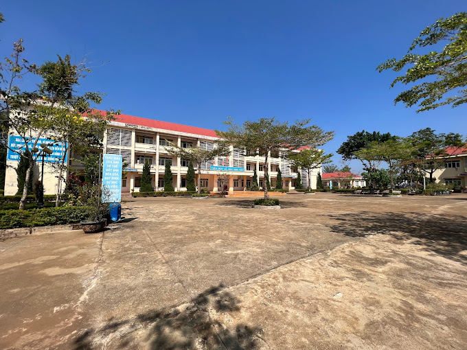

TRƯỜNG THPT TRƯỜNG CHINH – NGÔI TRƯỜNG CỦA TRI THỨC, ƯỚC MƠ VÀ KHÁT VỌNG VƯƠN XA
Nằm giữa vùng đất giàu truyền thống cách mạng và đang từng ngày thay da đổi thịt – Thôn 7, xã Đắk Wer, huyện Đắk R’lấp, tỉnh Đắk Nông – Trường THPT Trường Chinh là biểu tượng của tinh thần hiếu học và nghị lực vươn lên trong gian khó. Trải qua những năm tháng xây dựng và trưởng thành, nhà trường đã không ngừng lớn mạnh cả về quy mô lẫn chất lượng giáo dục, trở thành địa chỉ tin cậy trong sự nghiệp trồng người nơi vùng đất cao nguyên đầy nắng gió. Với đội ngũ giáo viên tâm huyết, giàu chuyên môn và những thế hệ học sinh chăm ngoan, năng động, Trường THPT Trường Chinh đang ngày càng khẳng định vị thế, góp phần bồi đắp tương lai tươi sáng cho quê hương Đắk Nông yêu dấu.

LỚP 12A1 – ĐOÀN KẾT, NĂNG ĐỘNG VÀ TỎA SÁNG DƯỚI MÁI TRƯỜNG TRƯỜNG CHINH
Với 42 thành viên – 42 cá tính, 42 ước mơ, lớp 12A1 Trường THPT Trường Chinh là một tập thể vững mạnh, gắn kết như một gia đình. Dưới sự dẫn dắt tận tâm của thầy Phan Công Tú – giáo viên Vật lí giàu kinh nghiệm và nhiệt huyết, 12A1 không ngừng vươn lên trong học tập, rèn luyện và hoạt động phong trào. Mỗi thành viên đều mang trong mình một màu sắc riêng, nhưng khi hòa vào nhau, lại tạo nên một bức tranh thanh xuân rực rỡ – nơi tình bạn, tình thầy trò và khát vọng tuổi trẻ cùng nhau thăng hoa. 12A1 không chỉ là tên gọi của một lớp học, mà còn là mái nhà chung của những trái tim đang đập cùng một nhịp: yêu thương – đoàn kết – và cùng nhau chinh phục những đỉnh cao phía trước.
THẦY PHAN CÔNG TÚ – NGỌN LỬA ĐAM MÊ VỚI MÔN VẬT LÍ, NGƯỜI LÁI ĐÒ TẬN TỤY VÀ XUẤT SẮC
Là giáo viên giảng dạy bộ môn Vật lí tại Trường THPT Trường Chinh, thầy Phan Công Tú không chỉ ghi dấu ấn bằng kiến thức vững vàng và phong cách giảng dạy truyền cảm, mà còn được biết đến như một tấm gương sáng về tinh thần trách nhiệm, sự tận tụy với nghề và lòng yêu thương học trò. Với nhiều năm cống hiến không ngừng nghỉ cho sự nghiệp giáo dục, thầy đã đạt được những thành tích xuất sắc trong công tác chuyên môn, bồi dưỡng học sinh giỏi và xây dựng môi trường học tập năng động, tích cực. Hình ảnh thầy Tú – giản dị, tâm huyết và luôn hết mình vì học sinh – từ lâu đã trở thành nguồn cảm hứng và niềm tự hào không chỉ của tập thể lớp, mà còn của cả ngôi trường thân yêu nơi vùng cao Đắk Nông.
Lời nhận xét về thầy từ học sinh